About
Here are some articles and posts that I wrote but don't know where to park. They are all about Azure.
The site is built with mdbook.
Let me know your feedback, suggestions or issues: issues on GitHub
Tutorials - Integrate Application Gateway, API Management and Self-Hosted Gateway in internal virtual network
üìÖ 7/18/2020
Overview
An API Management (APIM) instance can be deployed in a virtual network (VNET) in Internal mode and then integrated with an Azure Application Gateway (AppGW) to provide access to both internal and external users. We can expand the APIM instance further with a self-hosted gateway to extend the capacity and the redundancy of the APIM.
In this series of tutorials, we discuss how to integrate an AppGW with an APIM instance and a self-hosted gateway in an virtual network in internal mode. You will learn the detailed process and steps, as well as things and issues you may need to pay attention.
The following diagram shows the components we will deploy in the tutorials. It is not meant to be a reference architecture of APIM, but just to show you what the deployment would look like. As the purpose of the tutorials is to show the possibility and how-to for such a deployment, we start the deployment from scratch and do it step by step.

The deployment can be automated with ARM template or Azure PowerShell modules. We use Azure Portal in the tutorials to better illustrate the process and the steps. To keep our focus on the integration of APIM and to make it easier for illustration, we only use the built-in Echo API for testing. There is no additional backend APIs in the deployment.
Let's begin.
Prepare the virtual network environment
In this tutorial, you learn to:
- ✅ Create a virtual network with 3 subnets
- ✅ Create a private DNS zone and link it to the virtual network
- ✅ Create an API Management instance
Create the virtual network
As the first step, we create a virtual network with 3 subnets.
- Open Azure Portal, click Resource Groups.
- Click Add to add a new resource group.
- Give the resource group a name, e.g.
apim-rg, and choose a region such as East US. Click Review + create button, and then click Create. - When the resource group is create, click Go to resource group to open it.
- On the resource group page, click Add to add a new resource.
- In the search box, input
Virtual Network, click it from the dropdown and click Create. - Give the virtual network a name, e.g.
apim-vnet, and choose the same region of the resource group. Click Next: IP Addresses. - Input CIDR for IPv4 address space, such as
172.17.0.0/16, and add the following 3 subnets.
| Subnet name | Subnet address range |
|---|---|
| apim-subnet | 172.17.0.0/24 |
| appgw-subnet | 172.17.1.0/24 |
| aks-subnet | 172.17.2.0/24 |
- Click Review + create and then click Create to create the virtual network.
Configure the Private DNS Zone
When you deploy API Management in a virtual network in Internal mode, all its service endpoints are only visible within the virtual network. The default domain name of API Management, azure-api.net, which is managed by Azure, cannot be used to access the service endpoints anymore. As API Management service only responds to requests to the host name configured on its service endpoints and it does not listen to requests coming from IP addresses, you need to configure custom domain names for the endpoints, and therefore need a DNS service in the virtual network to manage the custom domain names.
In the tutorials, we use a Private DNS Zone to manage the custom domain names.
- In Azure Portal, go to the apim-rg resource group. Click Add to add a new resource.
- In the search box, input
Private DNS Zone, click it on the dropdown and click Create. - Make sure apim-rg is selected as the resource group.
- Input a top level domain name for Name. For example, we use
contoso.netfor it in the tutorials. - Click Review + create and then click Create to create the zone.
- When the zone is created, click Go to resource to open it.
- Click Virtual network links and then click Add to link it to the virtual network.
- Give the link a name, e.g.
apim-vnet-link, chooseapim-vnetand check Enable auto registration. Click OK.
Create the API Management instance
In the apim-rg resource group, create an API Management instance. For more details, please see Create a new Azure API Management service instance.
Please make sure you choose East US for the region which is the same as the virtual network, and choose either Developer or Premium for the Pricing tier. Only these two tiers support the virtual network integration.
When the APIM instance is created, all steps in this tutorial are completed. Let's move to the next one.
Connect API Management to virtual network in Internal mode
In the previous tutorial, you created the virtual network, the private DNS zone and the API Management instance. In this tutorial, we continue connecting the API Management instance to the virtual network in Internal mode.
In this tutorial, you learn to:
- ✅ Connect the APIM instance in the virtual network in Internal mode
- ✅ Create custom domain names in the private DNS zone
- ✅ Create self-signed certificates with PowerShell script
- ✅ Configure the APIM instance with custom domain names
Connect APIM instance to the VNET in Internal mode
-
In Azure Portal, open the APIM instance you created in the previous tutorial.
-
Click Virtual network under Deployment and infrastructure to open the VNET integration page.
-
Choose Internal for Virtual network and click the VNET option below to choose the VNET and the subnet.
-
Choose apim-vnet for the virtual network and apim-subnet for the subnet. Click Apply.
-
Click Save to apply the changes. The changes could take 15 to 45 minutes to be applied.
-
When the APIM instance is deployed in the VNET successfully, you can find the private and public virtual IP addresses for the APIM instance on the Overview page. Take a note for the private IP address. We need to use it later.

For more information about the impact of the VNET Internal mode, please see this document.
Create custom domain names
With VNET Internal mode, we need to configure the APIM instance with custom domain names before we can access its service endpoints. In our scenarios, we need at least 2 domain names, one for the Gateway endpoint and the other for the Management endpoint.
- In Azure Portal, open the private DNS zone contoso.net.
- Click Record set to add a new record set.
- Create the record set with Name:
apim-gwand IP address:172.17.0.5which is the private IP address we get in previous steps. - Repeat the steps to create another record set with Name:
apim-mgmtand IP address:172.17.0.5.
Create self-signed certificates for SSL
We also need certificates for SSL bindings of APIM. In the production environment, you should use the certificates that are trusted by your organization. We use self-signed certificates in these tutorials just for demo purpose.
To make things easier, we create 2 certificates with the following PowerShell script. One of the certificates is a root certificate for signing, and the other is a wildcard certificate (CN=*.contoso.net) for SSL bindings of the custom domain names.
# Create the root signing cert
$root = New-SelfSignedCertificate -Type Custom -KeySpec Signature `
-Subject "CN=contoso-net-signing-root" -KeyExportPolicy Exportable `
-HashAlgorithm sha256 -KeyLength 4096 `
-CertStoreLocation "Cert:\CurrentUser\My" -KeyUsageProperty Sign `
-KeyUsage CertSign -NotAfter (get-date).AddYears(5)
# Create the wildcard SSL cert.
$ssl = New-SelfSignedCertificate -Type Custom -DnsName "*.contoso.net","contoso.net" `
-KeySpec Signature `
-Subject "CN=*.contoso.net" -KeyExportPolicy Exportable `
-HashAlgorithm sha256 -KeyLength 2048 `
-CertStoreLocation "Cert:\CurrentUser\My" `
-Signer $root
# Export CER of the root and SSL certs
Export-Certificate -Type CERT -Cert $root -FilePath .\contoso-signing-root.cer
Export-Certificate -Type CERT -Cert $ssl -FilePath .\contoso-ssl.cer
# Export PFX of the root and SSL certs
Export-PfxCertificate -Cert $root -FilePath .\contoso-signing-root.pfx `
-Password (read-host -AsSecureString -Prompt "password")
Export-PfxCertificate -Cert $ssl -FilePath .\contoso-ssl.pfx `
-ChainOption BuildChain -Password (read-host -AsSecureString -Prompt "password")
With the above script, you get the following 4 files.
- contoso-signing-root.cer
- contoso-signing-root.pfx
- contoso-ssl.cer
- contoso-ssl.pfx
Please note down the passwords you use for the PFX files. We need to use them later.
Configure custom domain names for the APIM instance
In the production environment, Azure Key Vault is recommended to manage the certificates. We use the Custom option in this tutorial. For more information about configuring custom domain, please see this document.
-
In the Azure Portal, go to the APIM instance.
-
Click Custom domains and click Add.
-
Configure the custom domain for the Gateway and Management endpoints with the following values.

| Type | Hostname | Certificate file | Password | Default SSL binding |
|---|---|---|---|---|
| Gateway | apim-gw.contoso.net | contoso-ssl.pfx | password of contoso-ssl.pfx | True |
| Management | apim-mgmt.contoso.net | contoso-ssl.pfx | password of contoso-ssl.pfx | True |
- Click Save to apply the changes.
The APIM instance is connected to the VNET in the Internal mode. You can move on to the next tutorial.
Integrate the APIM instance with Application Gateway
In the last tutorial, you connected the APIM instance to the VNET in Internal mode and configured the custom domain names for it. In this tutorial, we continue integrating the APIM instance with an Application Gateway.
In this tutorial, you learn to:
- ✅ Create Application Gateway
- ✅ Create the custom healthy probe for APIM
- ✅ Verify the integration
Create Application Gateway
-
In the Azure Portal, add a new resource by clicking Create a resource link.
-
Search and create
Application Gateway. -
Choose resource group
apim-rg, regionEast US, and give it a name such asapim-appgw. -
Choose VNET
apim-vnetand subnetappgw-subnet. Click Next: Frontends button. -
Choose
Publicfor the frontend IP and create a new public IP address. And then click Next: backend button. -
Add a backend pool as shown in the following diagram.
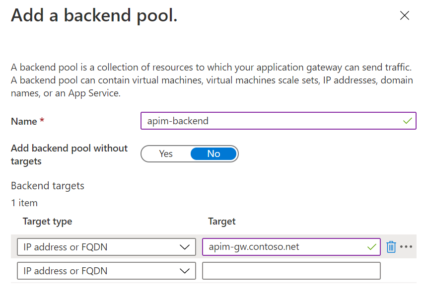
-
Move to Configuration and add a routing rule. The Listener of the routing rule is shown below.
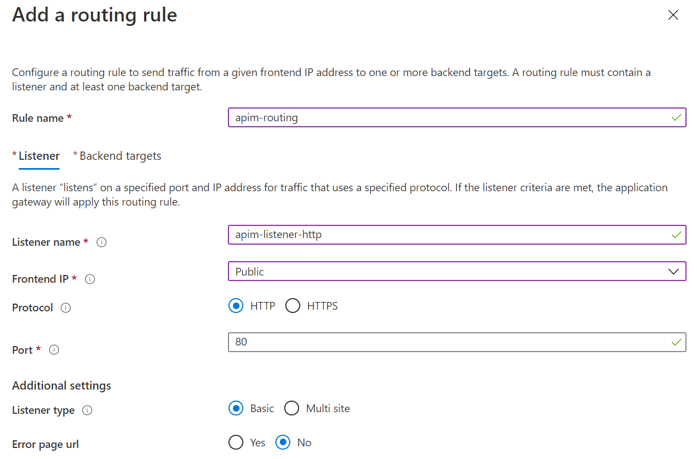
-
Choose apim-backend as the Backend target, and add a new HTTP settings as shown below. Note that
contoso-signing-root.ceris used for CER certificate and Host name override is set to pick the name from backend.
-
Move to Tags and add tags if you want. Then move to Review + create.
-
Click Create to create the AppGW.
Create custom health probe
When the deployment of the AppGW is completed, if you go to the resource, you would notice that the backend status is unhealthy. That is because the default probe of AppGW doesn't work for APIM. We need to create a custom health probe for it.

-
Click Health probes and click Add to add a custom health probe. The details of the custom health probe are shown in the diagram below. Note the Protocol and host name settings. The Path of the APIM probe is
/status-0123456789abcdef.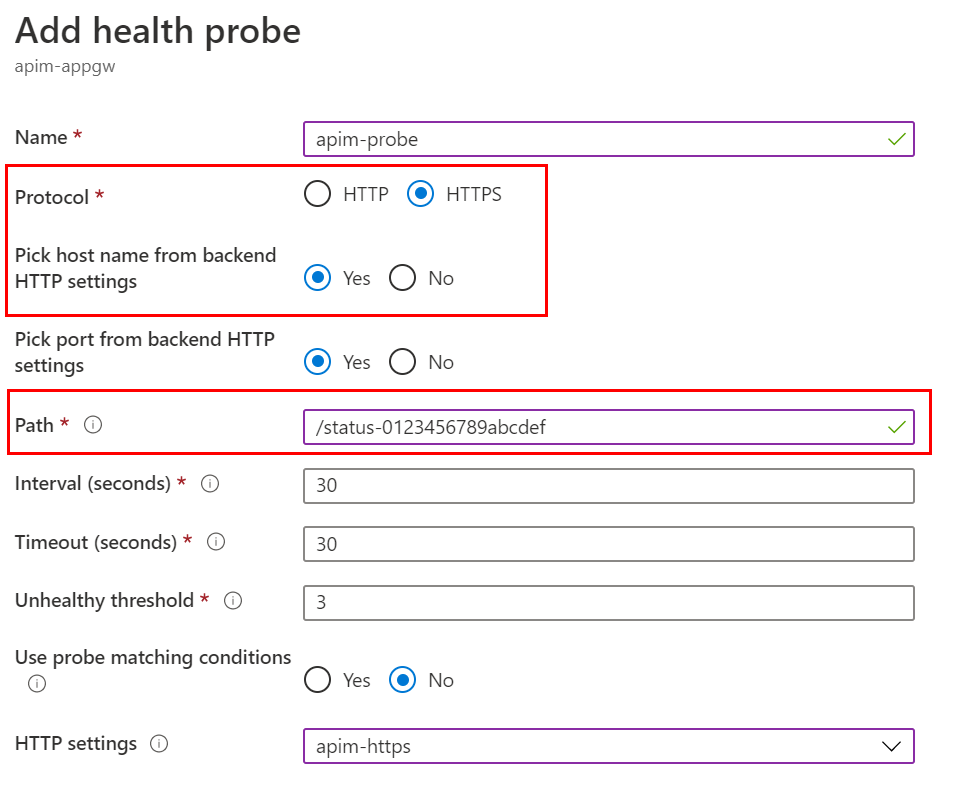
-
Uncheck I want to test the backend health before adding the health probe option and click Add.
-
Go to Backend health and refresh. The status of the backend should be Healthy now.
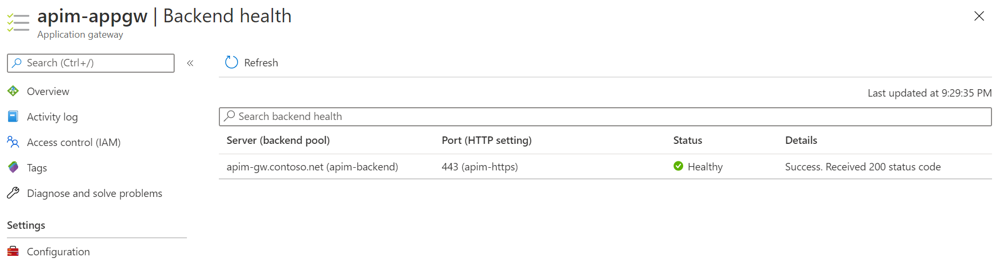
Verify the integration
We can verify if the integration works by sending a request to the public IP address of the AppGW. We do it with Azure Cloud Shell in this tutorial. You can also do it with other tools such as Postman.
-
In the Azure Portal, open Azure Cloud Shell. Choose Bash for the shell.
-
Run the following command with
curl. You can find the subscription key of APIM on the Subscriptions page of APIM, and the public IP address of AppGW on the Overview page of AppGW.curl -I -H "Ocp-Apim-Subscription-Key: [subscription key]" http://[AppGW public IP]/echo/resource -
If everything works, you get
HTTP 200 OKin the response.
Now you've integrated the APIM instance with an AppGW. Let's move on to the next tutorial to expand the deployment further with a self-hosted gateway.
Deploy self-hosted gateway
In the previous tutorials, you've deployed the APIM instance in the internal VNET and integrated it with the AppGW. In this tutorial, we expand the deployment with a self-hosted gateway to extend the capacity and redundancy of the APIM instance.
In this tutorial, you learn to:
- ✅ Deploy an Azure Kubernetes Service (AKS) cluster in the VNET
- ✅ Deploy a self-hosted gateway in the AKS cluster
Deploy an AKS cluster to host the self-hosted gateway
The self-hosted gateway of APIM is a containerized, functionally-equivalent version of the managed gateway that is part of every APIM service deployed. It can be deployed to Docker, Kubernetes, or any other container orchestration solution running on a server cluster on premises, cloud infrastructure, or for evaluation and development purposes, on a personal computer. In this tutorial, we deploy an AKS cluster to host the self-hosted gateway.
Create a service principal and assign permissions
To allow the AKS cluster to access the VNET and subnet, we need to configure it with a service principal.
-
In the Azure Portal, open Cloud Shell and choose Bash as the shell.
-
Run the following command to create the service principal and take a note on the output. We need to use it later.
az ad sp create-for-rbac --skip-assignment -
Assign the service principal Network Contributor role to the VNET with the following command.
<appId>is the value ofappIdfrom the output of the above step.VNET_ID=$(az network vnet show --resource-group apim-rg --name apim-vnet --query id -o tsv) az role assignment create --assignee <appId> --scope $VNET_ID --role "Network Contributor"
Deploy the AKS cluster with Azure Portal
We deploy the AKS cluster to the VNET and the corresponding subnet. For details about the AKS networking, please see this document.
-
In the Azure Portal, add a new resource to the apim-rg resource group.
-
Search
Kubernetes Serviceand click Create. -
Choose resource group
apim-rg, regionEast USand give the cluster a name such asapim-aks. Accept other default settings and move to Next: Node pools. -
Accept default settings for node pools and move to Next: Authentication.
-
Choose Service principal as the Authentication method and click Configure service principal to configure it.
-
Choose Use existing, and input the client ID and client secret. They are the values of appID and password from the output of creating the service principal command.

-
Move to Next: Networking.
-
Choose Advanced for Network configuration option and apply the settings as shown in the diagram below.

-
Click Review + create and then click Create to deploy the AKS cluster.
-
When the deployment is completed, open Cloud Shell and run the following command. Make sure the cluster info of the AKS cluster can be shown.
az aks get-credentials --resource-group apim-rg --name apim-aks kubectl cluster-info
Deploy the self-hosted gateway
-
In the Azure Portal, go to the API Management.
-
Click Gateways and click Add to add a self-hosted gateway as shown below.

-
When the gateway is added, click it to open its settings.
-
Click Deployment and then click Kubernetes.
In normal cases, we can use the yaml to deploy the gateway straightly. But as we are in an internal VNET environment, we need to make some changes to the yaml before it can be deployed.
-
Open the Cloud Shell. Copy and run the following command to create the secret for the gateway key in AKS first.

As we are using custom domain names and self-signed SSL certificate, the certificate needs to be trusted by the self-hosted gateway. We create a configMap to install the certificate to the gateway pod.
In production environment, you would want to use more secured options, such as Pod Identity and Azure Key Vault, to manage the certificates.
-
In the Cloud Shell, upload contoso-signing-root.cer.
-
Convert the CER to PEM before it can be used for the gateway pod.
openssl x509 -inform der -in contoso-signing-root.cer -out contoso-signing-root.pem -
Create a configMap in the AKS for the certificate.
kubectl create configmap signing-root --from-file=contoso-signing-root.pem
We need to make 3 changes to the yaml file generated by APIM.
- Change the config.service.endpoint to use the custom domain name of the management service endpoint.
- Install the certificate to the pod so that it can be trusted by the pod.
- Use an internal load balancer to expose the gateway service.
-
Open the editor of the Cloud Shell, and then copy and paste the content of the yaml generated by APIM to it.

-
Change the domain name of config.service.endpoint to
apim-mgmt.contoso.net. -
Add the annotation for the internal load balancer,
service.beta.kubernetes.io/azure-load-balancer-internal: "true", to the service. -
Create a volume based on the configMap
signing-rootand mount thecontoso-signing-root.pemfrom it. The complete code of the yaml is shown below.Note that you need to change the
<subscription id>in config.service.endpoint.# NOTE: Before deploying into production please review documentation -> https://aka.ms/self-hosted-gateway-production --- apiVersion: v1 kind: ConfigMap metadata: name: apim-shgw-env data: # change to the domain name of management endpoint config.service.endpoint: "https://apim-mgmt.contoso.net/subscriptions/<subscription id>/resourceGroups/apim-rg/providers/Microsoft.ApiManagement/service/apiminst32?api-version=2019-12-01" --- apiVersion: apps/v1 kind: Deployment metadata: name: apim-shgw spec: replicas: 1 selector: matchLabels: app: apim-shgw template: metadata: labels: app: apim-shgw spec: containers: - name: apim-shgw image: mcr.microsoft.com/azure-api-management/gateway:latest ports: - name: http containerPort: 8080 - name: https containerPort: 8081 env: - name: config.service.auth valueFrom: secretKeyRef: name: apim-shgw-token key: value envFrom: - configMapRef: name: apim-shgw-env volumeMounts: # mount the signing certificate - name: signing-root-volume mountPath: /etc/ssl/certs/contoso-signing-root.pem subPath: contoso-signing-root.pem readOnly: false volumes: - name: signing-root-volume configMap: name: signing-root --- apiVersion: v1 kind: Service metadata: name: apim-shgw annotations: # use internal load balancer service.beta.kubernetes.io/azure-load-balancer-internal: "true" spec: type: LoadBalancer ports: - name: http port: 80 targetPort: 8080 - name: https port: 443 targetPort: 8081 selector: app: apim-shgw -
Save the yaml to a file,
apim-shgw.yaml, and run the following command to deploy it.kubectl apply -f ./apim-shgw.yaml -
When the self-hosted gateway is deployed successfully, you would see 1 node in the status of the self-hosted gateway in the Azure Portal.

In case if the deployment is completed but the node in the status keeps showing 0, you can check the log of pod with
kubectl logs <pod-name>to find out what is wrong. Possible reasons could be the URL of the management endpoint is incorrect or the root certificate is not installed properly.
In the next tutorial, we will integrate the self-hosted gateway with the Application Gateway.
Integrate Application Gateway with the self-hosted gateway
In the previous tutorial, you've deployed the self-hosted gateway in the AKS cluster. In this tutorial, you continue integrating it with the Application Gateway which is the last piece of the puzzle.
In this tutorial, you learn to:
- ✅ Configure the domain name for the self-hosted gateway
- ✅ Integrate the AppGW with the self-hosted gateway
Configure the domain name for the self-hosted gateway
Before the self-hosted gateway can be added to the backend pool of the AppGW, you need to configure a custom domain name for it.
-
Open Cloud Shell and run the following command to find the IP address of the self-hosted gateway service.
kubectl get service -
Take a note of the External-IP address of apim-shgw service.
The external IP of the service is within the address space of the VNET because we used an internal load balancer for it.

-
In the Azure Portal, go to the private DNS zone
contoso.net, add a new record set and point it to the IP address of the gateway service, as shown below.
-
Go to API Management in the Azure Portal.
-
Click Certificates and click Add to add the SSL certificate.
-
Add
contoso-ssl.pfx, as shown below.
-
Open the self-hosted gateway settings by clicking Gateways and the gateway.
-
Click Hostnames and click Add to add a new host name for the gateway.
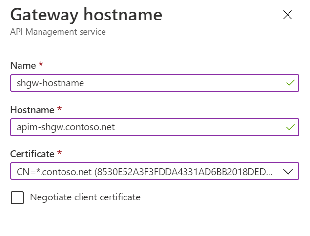
Integrate AppGW with the self-hosted gateway
-
In the Azure Portal, go to Application Gateway.
-
Click Backend pools and the existing backend pool apim-backend.
-
Add
apim-shgw.contoso.netas a new type of IP address or FQDN target. -
When the backend target is added to the backend pool, click Health probes and the existing custom probe apim-probe.
-
Update the Path from
/status-0123456789abcdefto/internal-status-0123456789abcdef. Uncheck I want to test the backend health before adding the health probe and click Save to save the changes.At the moment, the documented probe path of APIM,
/status-0123456789abcdef, doesn't work for the self-hosted gateway./internal-status-0123456789abcdefis an undocumented probe path which works for both APIM and the self-hosted gateway temporarily. The APIM product team is working on an update of the probe path for the self-hosted gateway. You need to update the path again when the update is available. -
Click Backend health to check the health of the backend. You should see both targets are healthy.

At this point, you've completed all tasks and steps that are needed to integrate Application Gateway, API Management and Self-Hosted Gateway in and internal virtual network.
Move on to the last tutorial of this series, we will run a quick test to see how the whole environment works.
Verify the deployment
In the previous tutorials, you've deployed the following environment in Azure. In this tutorial, we test if the deployment works as expected, and if the requests can be load balanced and handled by both APIM and the self-hosted gateway.
In this tutorial, you learn to:
- ✅ Send requests to API Management through Application Gateway
- ✅ Verify if the requests are distributed to both API Managenet and the self-hosted gateway
Send requests through Application Gateway
-
In the Azure Portal, open Azure Cloud Shell. Choose Bash for the shell.
-
Run the following command with
curl. You can find the subscription key of APIM on its Subscriptions page, and the public IP address of AppGW on its Overview page.curl -I -H "Ocp-Apim-Subscription-Key: [subscription key]" http://[AppGW public IP]/echo/resource -
If everything works, you get
HTTP 200 OKin the response.
Test if the requests are distributed to both APIM and the self-hosted gateway
To test if the requests are handled by either APIM or the self-hosted gateway, you can send HTTP header Ocp-Apim-Trace to enable the trace of APIM. To make the verification even more intuitive, we use a custom policy to retrieve the host from APIM.
-
In the Azure Portal, go to API Management.
-
Click APIs > Echo API > All operations.
-
Click </> on the Inbound processing card to open the policy editor.
-
Replace the code in the policy editor with the code below.
<policies> <inbound> <base /> <set-variable name="inbound-host" value="@(context.Request.Headers.GetValueOrDefault("Host"))" /> </inbound> <backend> <base /> </backend> <outbound> <base /> <set-header name="apim-host" exists-action="override"> <value>@((string)context.Variables["inbound-host"])</value> </set-header> </outbound> <on-error> <base /> </on-error> </policies> -
In the Cloud Shell, run the same
curlcommand as shown in the previous section. Run the command multiple times. You'll notice that theapim-headerin the response could be eitherapim-gw.contoso.net, which is the APIM instance, orapim-shgw.contoso.net, which is the self-hosted gateway. AppGW uses the round robin to distribute the requests to both of them.
You've completed this series of tutorials. Congratulations! üéâ
Spring Boot, MySQL and Azure App Service - What Azure would look like for Java developers
üìÖ 2/7/2019
This is the lab content that I created for a session that I delivered in the Microsoft Ready 2019 in Seattle.
This technical lab is designed for you to experience building Java applications, deploying and running them on Azure. It consists of several exercises which are step by step tutorials that you can follow easily. The lab is focused on developing Java applications with Microsoft tools such as Visual Studio Code, deploying the applications to App Service on Linux, and implementing Continuous Integration/Continuous Delivery (CI/CD) with Azure Pipelines.
Objectives
As a result of working through this lab, you will
- get real experience in developing Java applications with VSCode, Azure DevOps and App Service.
- be better able to articulate the Azure DevOps CI/CD experience for Java applications.
- be better able to understand the basics of Spring Boot framework and MySQL database.
Exercise 0 - Familiar with the lab environment
In this exercise, we will check the environment settings on the lab machine to make sure it is ready for the lab. After completing the exercise, you will know the basic environment settings which are required for the Java development on Windows.
0.1 - Java settings
In this lab, we will use OpenJDK and Maven to develop and build Java applications. Both of these two components have been installed and configured on the lab machine. You can follow the steps below to check the settings to make sure they are working.
-
On the lab machine, click the Command Prompt icon on Windows task bar to launch the Command Prompt.
-
In the Command Prompt window, run command
java --versionfollowed bymvn --version. -
The output in the Command Prompt should look like the following screenshot.

If you can see the similar output as shown in the above screenshot, the Java settings are correct.
0.2 - Local MySQL instance
On the lab machine, MySQL is installed and a local instance is configured. We will use it as the local database engine for testing purpose when we develop Java applications. Please follow the steps below to verify the local instance of MySQL is working.
-
On the lab machine, click the MySQL Workbench icon on Windows task bar to launch it.
-
In the window of MySQL Workbench, click Local instance MySQL80, as shown in the screenshot below, input the password
P@ssw0rd1and click OK button.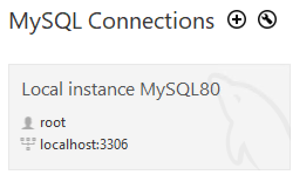
-
If the local MySQL instance is working well, the Workbench should connect to it successfully, and you should see the Server Status as Running when you click the Server Status on the left Navigator.
-
Let's create a new database that we will use in the later exercises. In the Query 1 window, run the following T-SQL to create a new database.
create database tododb; -
Close MySQL Workbench after you finish the exercise.
0.3 - Azure Database for MySQL
In this lab, we will use Azure Database for MySQL as our database engine. There is an Azure Database for MySQL instance in your Azure subscription. We need to prepare the database on it for our code.
-
Open browser and explore https://portal.azure.com, sign in with the Azure account provided.
-
Click Resource groups > [the name of the resource group]. You will see 4 resources which look similar to the following screenshot.
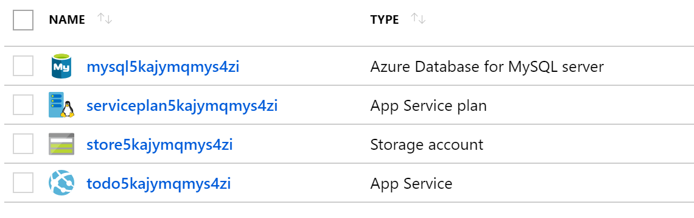
-
Click the name of Azure Database for MySQL server to view its details.
-
Click Cloud Shell button to open the cloud shell. Select Bash as the shell environment.
[!NOTE] You might have to initialize the Cloud Shell and configure the storage account that it needs to use. If prompt, choose Show advanced settings, and then choose to use existing resource group and storage account, and create a new file share. See screenshot below as a reference. 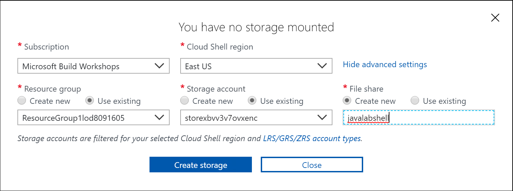
-
In cloud shell window, connect to MySQL server with the following command:
mysql --host [mysql server name].mysql.database.azure.com --user dbadmin@[mysql server name] -pYou can find [mysql server name] from the Overview page of your Azure MySQL instance. See screenshot below as a reference.
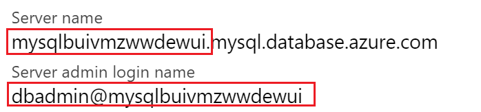
-
When prompt, type the password
P@ssw0rd1. -
When you connect to MySQL server successfully, type the following command to view all existing databases.
show databases; -
Type the following SQL script to prepare for the database that we will use in our code later.
CREATE DATABASE tododb; CREATE USER 'springuser'@'%' IDENTIFIED BY 'Spring1234'; GRANT ALL PRIVILEGES ON tododb.* TO 'springuser'@'%'; FLUSH PRIVILEGES; -
After running the above script, if you run
show databases;again, you will see a new database created. -
Type
quit;to close the connection, and then close the cloud shell window. -
Click Connection security of Azure MySQL instance, turn on Allow access to Azure services and click Save. See screenshot below.
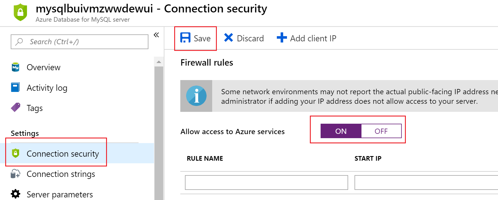
0.4 - Extensions of Visual Studio Code
In this lab, we will use Visual Studio Code as our development environment for Java applications. The Java language support in Visual Studio Code is provided through a set of extensions. You can view these extensions in Visual Studio Code. For more information about using Java in VS Code, please see Java in Visual Studio Code.
- Open VSCode by clicking its icon
 on Windows task bar.
on Windows task bar. - Open the extensions panel by clicking its icon or press
Ctrl+Shift+X. You should see all extensions that are required by this lab.
Exercise 1 - Build a Sprint Boot web app in VS Code
In this exercise, we will create a Sprint Boot project with VS Code from scratch. We will also run the code and debug it in VS Code. After completing the exercise, you will better understand the developer experience that VS Code provides to Java developers.
1.1 - Create a Sprint Boot project in VS Code
Please follow the steps below to create a Sprint Boot project in VS Code from scratch.
-
Open VS Code. If there is any folder opened in VS Code, close it by clicking File > Close Folder or pressing
Ctrl+K F. -
In VS Code, open Command Palette by clicking View > Command Palette or pressing
Ctrl+Shift+P. -
In Command Palette, input
Springand then select Spring Initializr: Generate a Maven Project. See screenshot below for a reference.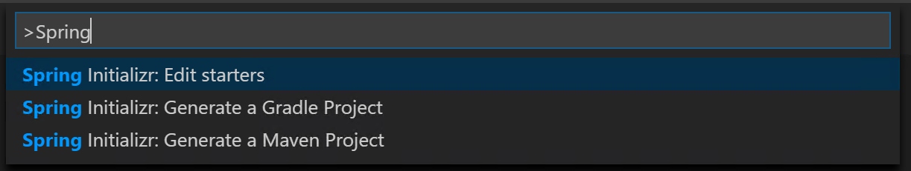
-
Follow the steps of Spring Initializr wizard with the following values.
|Properties |Value | |------------|----------------| |Language |Java | |Group Id |com.azurelabs | |Artifact Id |hellospringboot | |Version |2.1.1 |
-
For dependencies, select DevTools and Web. See screenshot below.
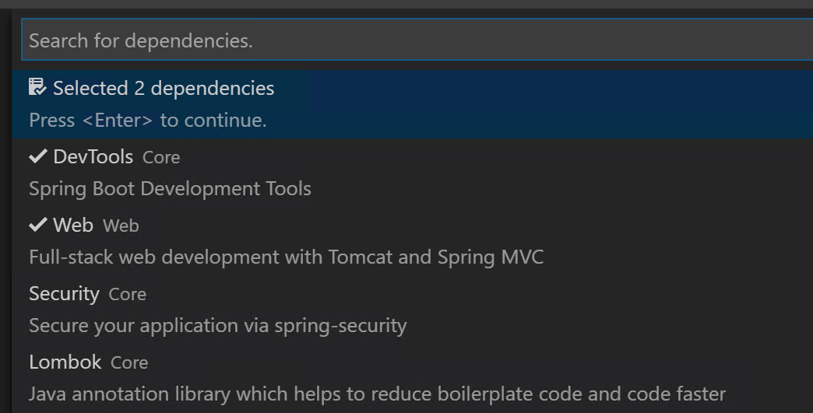
-
In the Select Folder window, select
C:\Codeas the folder and click Generate into this folder button. -
Once the project is generated, click Open button on the popup in VS Code to open the folder in VS Code.

By following the Spring Initializr wizard, a Spring Boot project is created. This is an empty project. It provides us a project structure based on which we can build our applications. The folder structure of the project is the typical structure of Maven projects.
1.2 - Implement a web controller
Let's add a simple web controller to handle the web request.
-
In VS Code, create a new file,
HelloController.java, in the folder src/main/java/com/azurelabs/hellospringboot. -
In this new file, write the following code:
[!NOTE] Type the code to try the Java coding experience in VS Code.
package com.azurelabs.hellospringboot; import org.springframework.web.bind.annotation.RequestMapping; import org.springframework.web.bind.annotation.RestController; @RestController public class HelloController { @RequestMapping("/") public String Index() { return "Hello, Spring Boot!"; } } -
With the above code, we have a simple web controller that can handle the request. To test the application locally, open the Terminal in VS Code by clicking View > Terminal or pressing
Ctrl+`. -
In the Terminal, run command
.\mvnw spring-boot:run. This command will compile the code and run it. -
When the project is running successfully, you will see the output in the Terminal which is similar as Started DemoApplication in 11.869 seconds (JVM running for 13.251).
-
Open a browser and visit
http://localhost:8080. You should see a simple page as shown in the screenshot below.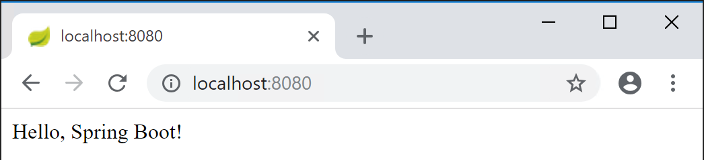
-
Close the browser, and stop the application by pressing
Ctrl+Cin Terminal.
1.3 - Debug the Java code in VS Code
To debug the Java application locally in VS Code, we need to configure the launch.json. Fortunately, VS Code has made it very easy for us to configure it.
-
In VS Code, click Debug icon on the left navigation or press
Ctrl+Shift+Dto open the Debug Panel. -
Click the Configure button to generate a launch.json file. See screenshot below for details. VS Code helps us generate the launch.json automatically based on the project settings.

-
Open
HelloController.javaand set a breakpoint on the code,return "Hello, Spring Boot!";. -
Press
F5or click Start Debugging button on the Debug Panel. -
When the application is running, open a browser and visit
http://localhost:8080. The breakpoint should be hit, as shown in the screenshot below. PressF5or click Continue and you will see the page in the browser.
-
Stop the debugging by clicking Stop button or pressing
Shift+F5.
Close VS Code and browser window after you complete the exercise.
Exercise 2 - Run a Spring Boot web app on Azure
In this exercise, let's switch the gear and create a simple web app with Spring Boot and MySQL, and then publish it to an Azure website. For the sake of time, let's get the completed code from the GitHub repository.
2.1 - Clone the GitHub repository and build the project locally
To clone the project, follow the steps below.
-
In the lab machine, launch the Command Prompt. Switch the work directory to C:\Code by typing the command:
cd C:\Code. -
Clone the repository with the command:
git clone https://github.com/chunliu/todowebjava.git. When the clone completes, the output in the Command Prompt looks like the following screenshot, and a new folder, todowebjava, is created in C:\Code.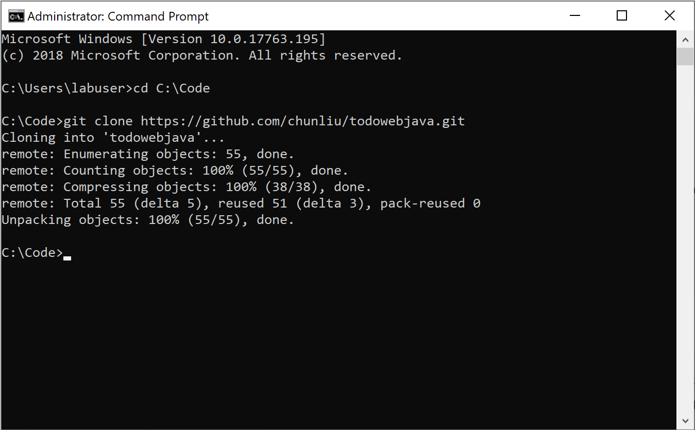
-
In the Command Prompt, type
cd todowebjavato go into the folder, and then typecode .to open the folder in VS Code. -
Explore the project structure and the Java code in the folder src/main/java/com/azurelabs/todowebjava. This project uses Spring Data JPA to read and persist data to MySQL database.
-
Let's configure the database connection in the project before we run it. Open application.properties file in src/main/resources folder.
-
Replace the following values in the application.properties file according to the table below, and save the changes. Don't change other settings in this file.
|Property Name |Old Value |New Value | |---------|---------|---------| |spring.datasource.url |${SPRING_DATASOURCE_URL} |jdbc:mysql://localhost:3306/tododb?serverTimezone=UTC | |spring.datasource.username |${SPRING_DATASOURCE_USERNAME} |root | |spring.datasource.password |${SPRING_DATASOURCE_PASSWORD} |P@ssw0rd1 | |server.port |${PORT} |80 |
-
Now we can test if it works. In VS Code, press
F5to launch the web app. When it is launched successfully, open a browser and explorehttp://localhost. You should see the home page of the todo web app. -
Let's create a new todo item in the web app. In the browser window, click Todo on the left navigation, and then click New Task.
-
In the pop up, input a name for the task, for example,
A new task, and click OK. A new task should be created accordingly. -
To verify if the data has been persisted in the database, you can open the MySQL Workbench, connect to the MySQL instance, and run the following query. You should see 1 record in the database.
use tododb; select * from todo_item;
2.2 - Publish the web app to Azure App Service
Follow the steps below to update the code and publish the web app to the Azure App Service.
-
In VS Code, open application.properties file in src/main/resources folder.
-
Instead of hard-coding the database connection string, we want to configure it via the Application Settings of Azure Web App. So discard the changes you made in section 2.1. The code of application.properties should look like the following which is the same as what you pulled from GitHub first time.
spring.datasource.driver-class-name=com.mysql.cj.jdbc.Driver spring.jpa.hibernate.ddl-auto=update spring.jpa.properties.hibernate.dialect=org.hibernate.dialect.MySQL57InnoDBDialect spring.datasource.url=${SPRING_DATASOURCE_URL} spring.datasource.username=${SPRING_DATASOURCE_USERNAME} spring.datasource.password=${SPRING_DATASOURCE_PASSWORD} server.port=${PORT} -
In the Terminal window, run command,
mvn clean package -DskipTests, to package the code. -
Find the package todowebjava-0.0.1-SNAPSHOT.jar in target folder. Right click and rename it to app.jar.
-
In VS Code, click Azure icon on the left navigation to open App Service explorer, and then click Sign in to Azure.
-
Click Copy & Open in the popup window. See screenshot below. A browser window will be opened.

-
In the browser window, right click in the Code input, select Paste to paste the device code, and click Continue button. See screenshot below as a reference.
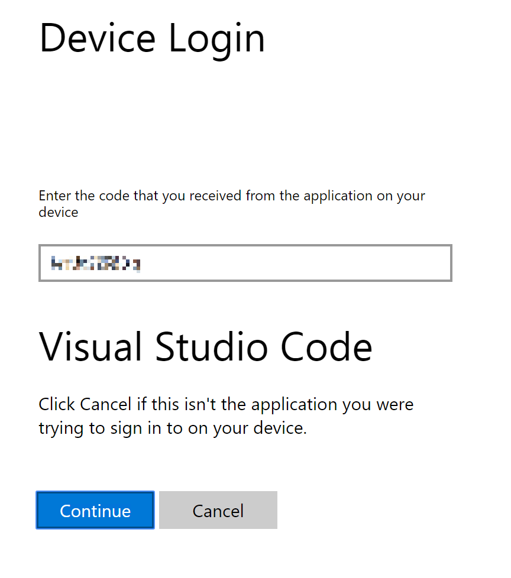
-
Sign in with the Azure account.
-
When you sign in successfully and see the following screen, close the browser window and go back to VS Code.
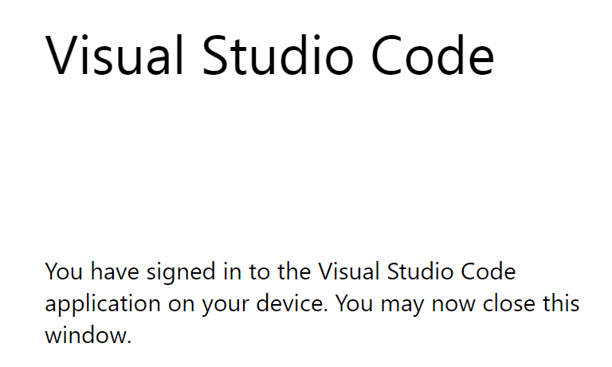
-
In Azure App Service explorer, expand the corresponding subscription and locate the Azure Web App. See screenshot below.

-
Right click Application Settings and click Add New Setting. Follow the instruction to add the following application settings. Alternatively you can also add these settings in Azure Portal.
|Name |Value | |---------------------------|---------| |SPRING_DATASOURCE_URL |jdbc:mysql://[mysql server name].mysql.database.azure.com:3306/tododb?useSSL=true&serverTimezone=UTC | |SPRING_DATASOURCE_USERNAME |springuser@[mysql server name] | |SPRING_DATASOURCE_PASSWORD |Spring1234 | |PORT |80 |
Replace [mysql server name] with your MySQL server name. For details about how to find [mysql server name], please refer to Section 0.3.
-
In VS Code, switch to workspace Explorer by clicking the Explorer button on the left navigation or press
Ctrl+Shift+E. -
Right click on app.jar and click Deploy to Web App.
-
Follow the instruction to choose the Azure subscription, and the existing Web App. In this lab, we don't use Create New Web App option.
-
In the popup dialog box, click Deploy button. The deployment process will be kicked off. You can open the Output window to see its progress.
-
When you see the following popup, the deployment completes successfully. Click Browse Website button to browse the website.
[!NOTE] You may have to restart the website in Azure Portal and wait for several minutes before you can see the home page of the website.

-
To verify if the site works properly, you can create a new task on the Todo page. Furthermore, you can use MySQL Workbench to connect to the MySQL server and query if the task you created is in the database.
Exercise 3 - Implement CI/CD with Azure DevOps
In this exercise, we will implement CI/CD for our Spring Boot project with Azure DevOps pipelines.
3.1 - Create an Azure DevOps organization
Follow the steps below to create an Azure DevOps organization. We will use it to create CI/CD pipelines.
-
Open browser and explore to https://dev.azure.com.
-
Sign in with the provided Azure account.
-
After signing in successfully, click Start free button on the Azure DevOps page, and then follow the wizard to create the organization.
-
When the organization is ready, create an Azure DevOps project by providing a project name, for example, todowebjava, and clicking Create project button. See screenshot below as a reference.

3.2 - Push the code repository to Azure DevOps Repos
Azure Pipelines support multiple source repositories, such as GitHub, Bitbucket etc. In our lab, we will use Azure Repos as the source repository. We need to push our source code from the local machine to Azure Repos.
-
Update the URL of the origin branch of Git to Azure Repos' URL with the following command:
git remote set-url origin [Azure Repos URL]To get the [Azure Repos URL], on the Azure DevOps project page, click Repos > Files. You will see push an existing repository from command line option. Copy the URL from there. See screenshot below as a reference.

-
Then push the repository to Azure Repos with command:
git push -u origin --all. When prompt, sign in with the Azure account provided with the lab. -
Once the repository is pushed successfully, you will be able to see the code in Azure DevOps. See screenshot below as a reference.
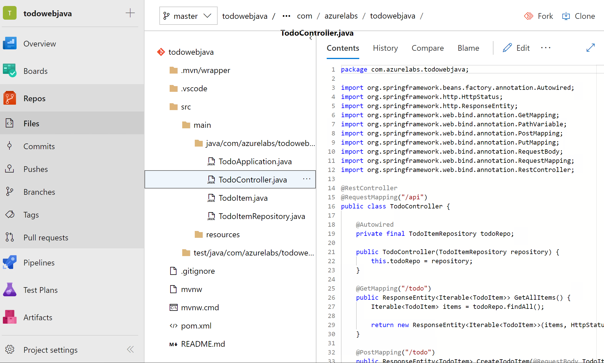
3.3 - Create the build pipeline
When the source code is in Azure Repos, we can create a build pipeline to build the code. Azure Pipelines support two ways to create a build pipeline, YAML pipeline and Visual Designer. For the sake of time, we will use the Visual Designer in this lab. You can try YAML pipeline by yourself later.
-
On Azure DevOps project page, click Pipelines > Builds, and then click New pipeline button.
-
On the New pipeline page, click Use the visual designer link to switch to the visual designer.
-
Select Azure Repos Git as the source, and choose the corresponding project repository, then click Continue.
-
On the Choose a template page, choose Maven as the template. See screenshot below as a reference.

-
When the build pipeline is created based on the Maven template, you don't even need to make any change. Azure Pipelines understand the Maven project and the default configurations are good enough for our lab. Go ahead to click Save & queue to queue a new build.
-
When the build is kicked off, you can monitor the build status. When the build completes successfully, click Summary and Tests tabs to view the results.
3.4 - Create the release
Follow the steps below to create the release pipeline.
-
On Azure DevOps project page, click Pipeline > Releases, and then click New pipeline button.
-
On the New release pipeline page, select Deploy a Java app to Azure App Service template.
-
Click Add an artifact, choose the build pipeline that you create in the previous exercise, choose Latest for Default version, and then click Add. See screenshot below as a reference.

-
Click 1 job, 2 tasks link on Stage 1 box.
-
We need to configure an Azure connection for the deployment. Click the Manage link besides Azure subscription. It will open the Azure connection settings page.
-
On the new page, click New service connection dropdown and click Azure Resource Manager.
-
On the popup window, input a Connection name, such as Java Web App, and choose the corresponding resource group from the dropdown, and then click OK. See screenshot below as a reference.
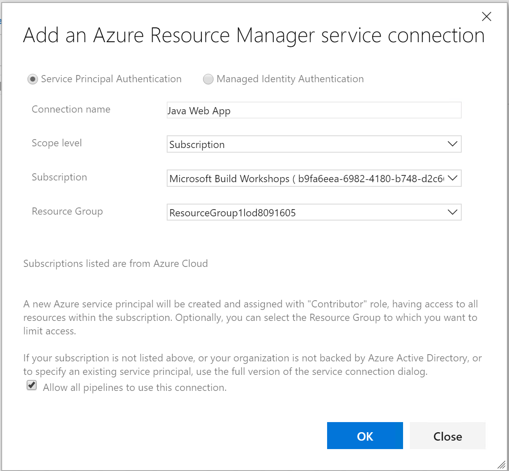
-
When the Azure connection is created successfully, go back to the New release pipeline page. Now you should be able to see the Azure connection you created in the Azure subscription dropdown list. If not, please click the refresh button besides the dropdown list and try again. Choose the Azure connection from the dropdown list.
-
For App type, choose Web App on Linux. And choose the corresponding Azure web app as App service name. See screenshot below as a reference.

-
As in our code we build a jar file rather than a war file, we will use Deploy Jar to Azure App Service task rather than Deploy War to Azure App Service task. So right click on Deploy War to Azure App Service and disable it, and right click on Deploy Jar to Azure App Service to enable it.
-
The most of the configurations for Deploy Jar to Azure App Service should have been generated. As in our code there is only one jar file, we can choose it specifically. Click the ... button besides Package or folder option and locate the todowebjava-0.0.1-SNAPSHOT.jar file as shown in the screenshot below.

-
With the above settings, we finish the configuration of the release pipeline. Click the Save button, and then Release > Create a release to test the release pipeline.
-
On the Create a new release page, select Stage 1 from the dropdown list and click Create button.
-
Click the new release created and then click Deploy button to kick start the deployment. You can click the stage box to open the console and monitor the progress of the deployment.
-
When the deployment completes successfully, explore the website in the browser.
3.5 - Clean up the Azure DevOps organization
After you complete all exercises, please follow the steps below to clean up the Azure DevOps organization so that the Azure account of the lab can be reused.
- On Azure DevOps project page, click Azure DevOps logo at the upper left corner, and then click Organization settings at the lower left corner.
- Click Overview under Organization Settings > General. Scroll down and then click Delete button under Delete organization.
- Copy and paste the organization name as shown in the popup window and click Delete button.
Conclusion
You have completed all exercises in this lab. In this lab, we have tried to
- develop Java applications based on Spring Boot with Visual Studio Code.
- deploy and run Java applications on Azure App Service on Linux.
- implement CI/CD for Spring Boot project with Azure DevOps.
Hope you've got the hands-on experience and better understanding regarding how Java and Azure could work together.
Additional resources
If you want to learn more about Java on Azure, the following resources could be used as starting points.